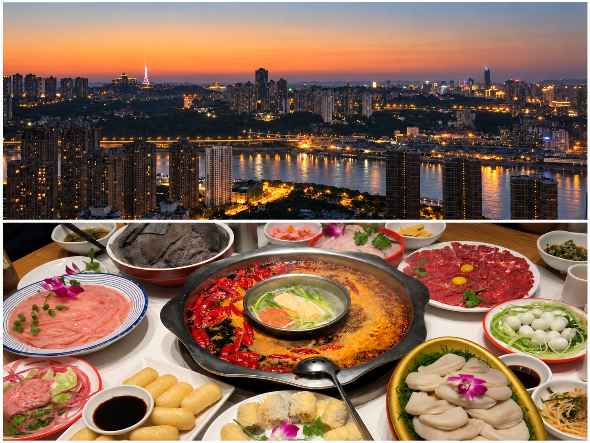
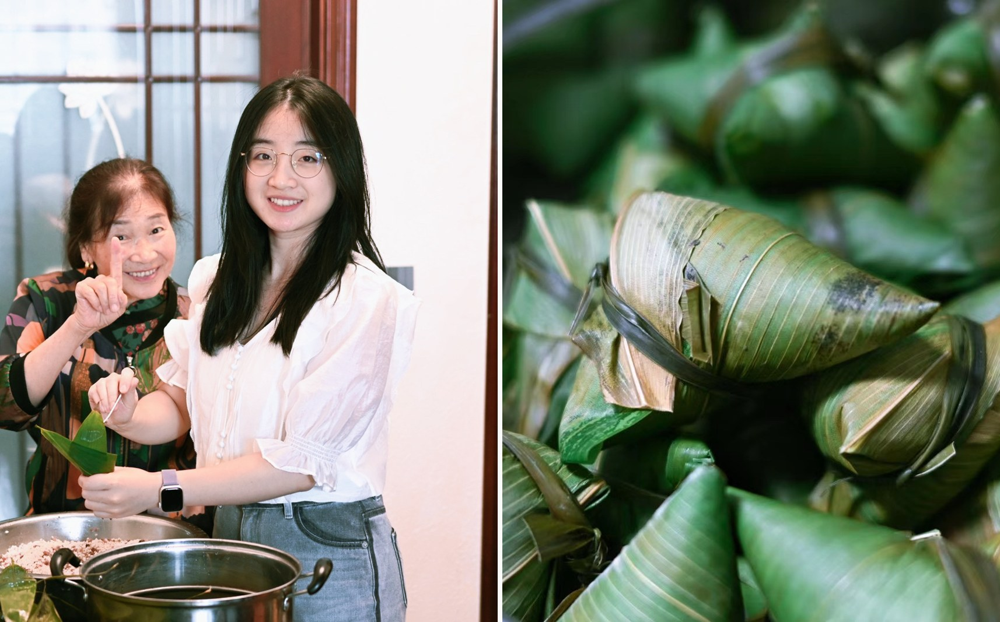
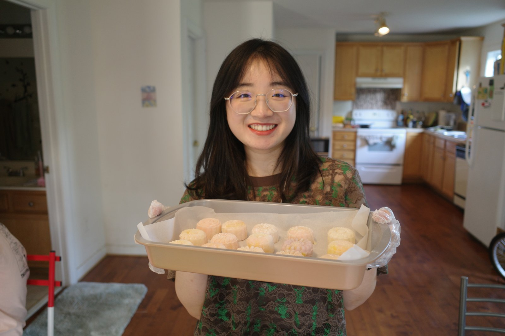
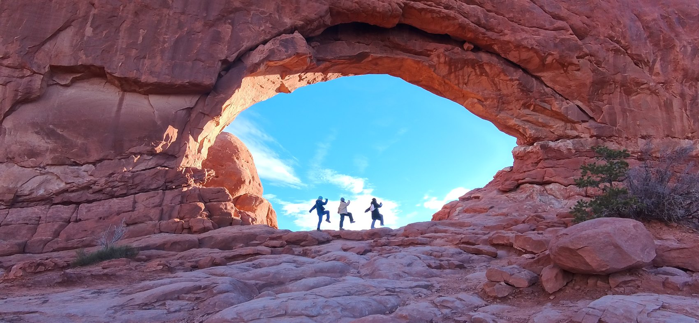
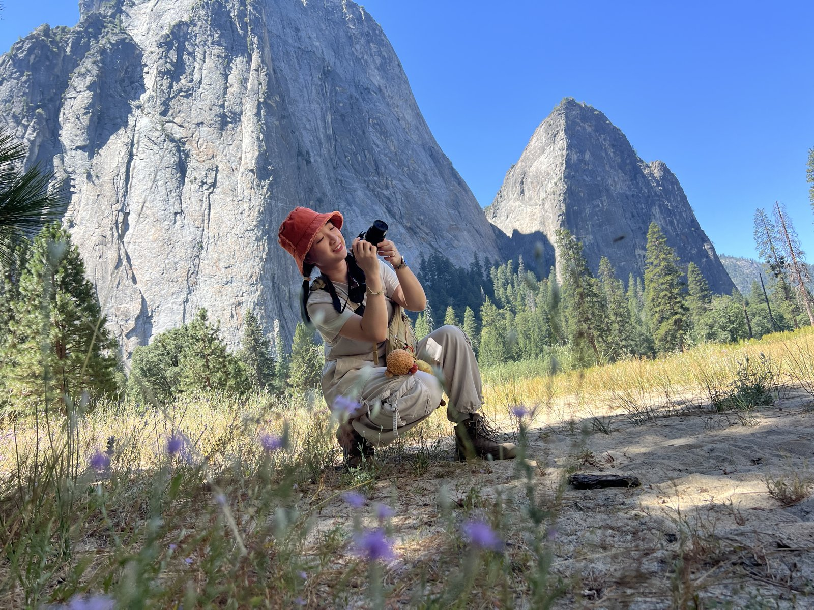
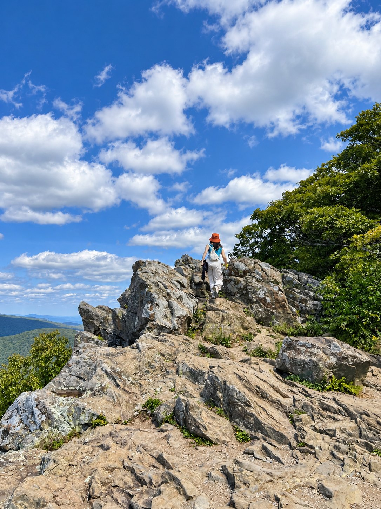
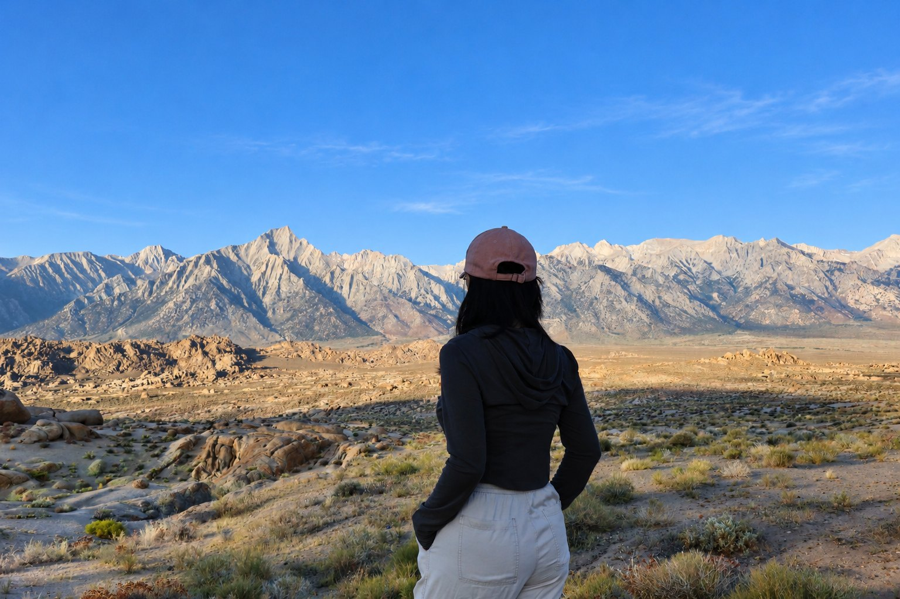

Personal
Beyond the lab
Outside of research, I enjoy cooking, exploring the outdoors, and documenting the places and moments I want to remember.

From Chongqing
I grew up in Chongqing, China, a mountainous city known for hotpot and unapologetically spicy food. Growing up there probably explains my lifelong love of chili peppers—and my conviction that most dishes can handle a little more spice.
In the kitchen
I love cooking and baking, although apparently I can’t leave research habits in the lab. Before trying a new dish, I usually read several recipes—the culinary equivalent of a literature review—compare their methods, synthesize what seems to work, and end up with my own version. And, like any good researcher, I occasionally change one more thing just to see what happens.



Exploring the outdoors
I love being outdoors and exploring new places—whether I’m hiking, taking photos, or simply wandering somewhere I haven’t been before. I especially enjoy the chance to slow down, take in my surroundings, and notice the little things I might otherwise miss.


